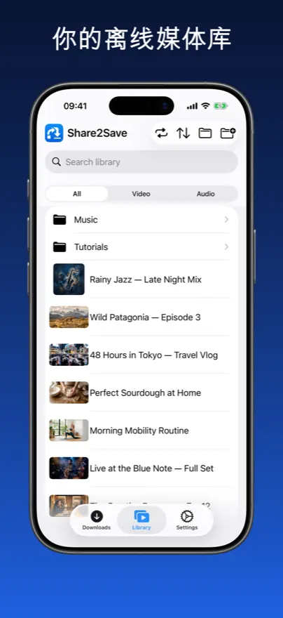
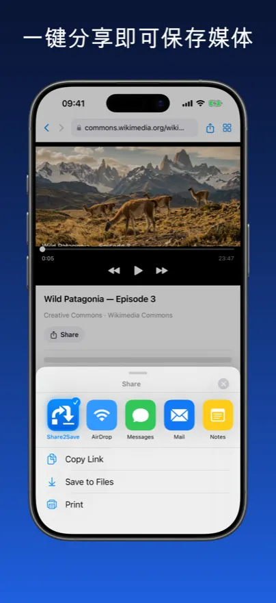
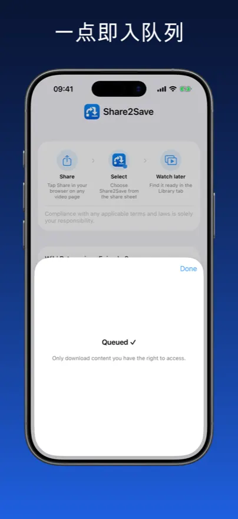
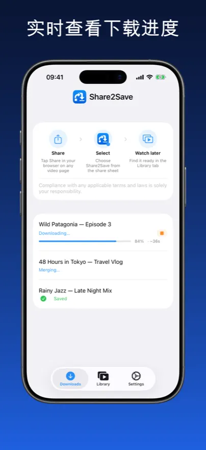
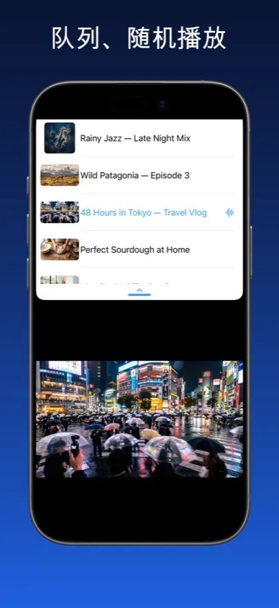
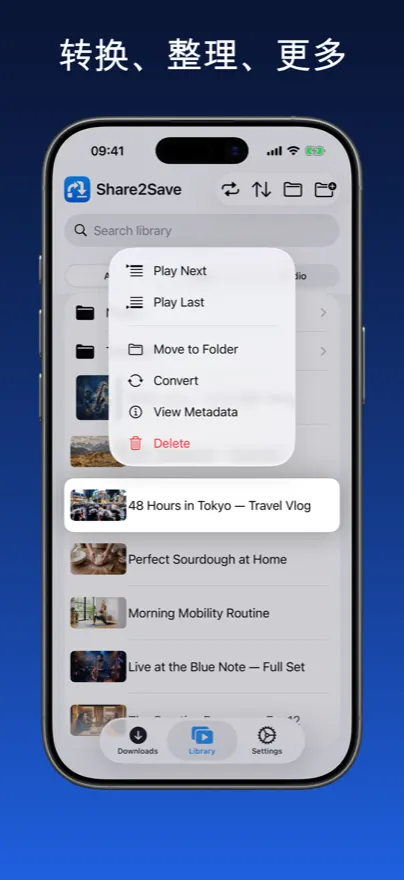
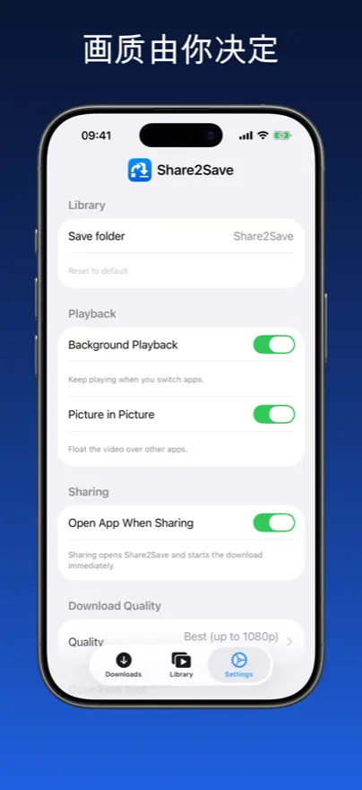

您的离线媒体库。
任意链接皆可收藏。
从任意链接将视频和音频保存到您的个人媒体库，随时随地观看——无缓冲，无需网络连接。
您的离线媒体库
真实应用截图 — 保存链接，离线观看，管理您的库。







3 步从链接到媒体库

点击分享
在Safari、Chrome或Firefox中，点击分享按钮，从分享菜单中选择Share2Save。
开始下载
Share2Save在后台下载视频或音频，即使关闭应用后也能继续。
离线观看
随时打开您的库 — 无需网络。从您上次停留的地方继续。
专为离线而建，专为隐私而建。
每个功能都为同一目标设计：您的媒体，在您需要时可用。
个人媒体库
在整洁的库中浏览所有保存的内容，分别有视频和音频标签。从停留处继续。
一键保存
从Safari、Chrome或Firefox分享任意视频或音频URL直接到Share2Save。下载立即开始。
后台下载
切换应用、锁屏或做其他事情时下载仍在继续。您的下载不会中断。
锁屏小组件
实时活动小组件直接在锁屏上显示下载进度。需要iOS 16.2+。
画中画
将视频弹出为浮动窗口，在使用其他应用时继续观看。
质量控制
选择最佳质量、1080p MP4、720p或仅音频。在设置中设置一次，每次下载都遵循您的偏好。
隐私优先
无需账户。无广告。无追踪。所有内容都存储在您的设备本地。
您需要的一切，不多一样
您的媒体。您的设备。您的规则。
无云端。无订阅。无妥协。
飞机上可用
在飞行前下载，在万米高空观看整个播放列表，无需支付Wi-Fi费用。
节省移动数据
在Wi-Fi下下载一次，永久观看而不消耗移动数据套餐。
全屏体验
沉浸式全屏播放，支持画中画，实现真正的多任务处理。
零追踪
无分析，无数据发送。您的观看习惯是您自己的事。
即时播放
无缓冲，无加载动画。文件从本地存储以全速即时播放。
支持10+种语言
应用已完全本地化，界面在世界任何地方都感觉自然。
常见问题
Share2Save支持广泛的视频和音频URL — 包括YouTube、Vimeo和许多播客和媒体源。受DRM保护的平台（如Netflix或Spotify）的内容因加密无法下载。Share2Save专为您有权访问的内容设计。
是的。Share2Save使用iOS后台URL会话技术，即使切换应用或锁屏，下载也会继续。在iOS 16.2及更高版本上，锁屏上的实时活动小组件显示实时下载进度。
完全由您决定。选择质量设置以平衡文件大小和质量：1080p MP4为最佳质量，720p为折中方案，仅音频为最小存储。您可以随时删除已保存的文件。
完全本地。Share2Save不需要账户，不向任何地方发送数据。下载的文件完全存储在您的设备上，永不上传或分享。您的手机上什么都不会离开。
是的 — 这正是它的全部意义。文件一旦下载，无需网络连接即可无限期使用。非常适合飞行、通勤、旅行或任何数据有限的地方。
是的。无订阅，无应用内购买，无广告。Share2Save完全免费。
您的媒体。随时随地。离线可用。
免费在iPhone和iPad上下载Share2Save。
在App Store下载免费 · iPhone和iPad · iOS 16+